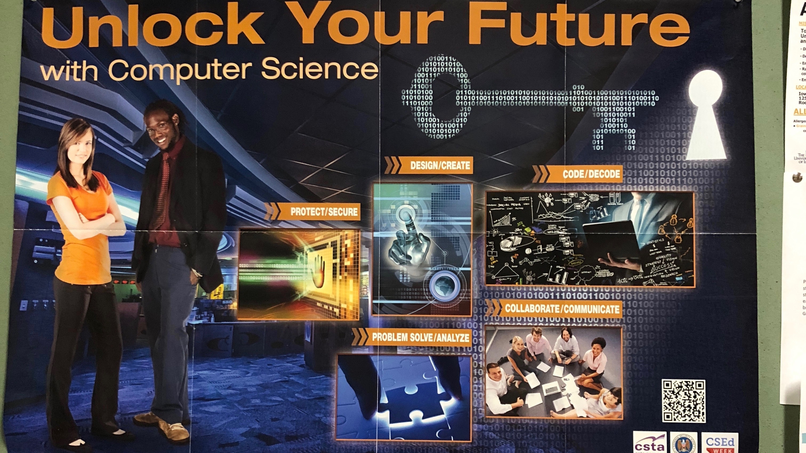

Week 06
 hilarious photo I found on the department bulletin board
The weeks are flying by! We’re getting 3 videos done a day– more than halfway done. As for my personal project, I’ve been focusing on PyCharm as an IDE that is lacking in accessibility. It is important to improve existing IDEs/systems to be more accessible rather than creating new/seperate ones to not only allow these users to integrate and participate as a social responsibility, but to give these users the same options and advantages that sighted ones do– especially with sophisticated products with such a visual emphasis like typical IDEs. More details are discussed in my project proposal, which I’ll attach on my week 10 report.
So as I said earlier, we are more than half way done with our video coding for the team project, but as I’m on a different timeline from the regular students, this was the other undergrad assistant’s last week. So we will see how this goes, me currently being the only active member on both projects! Kyle is also getting her new PhD students next week, so I’m excited to see new faces around the lab.